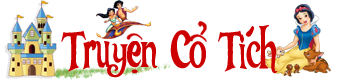

Trang chủ | Giới thiệu | Liên hệ | Quản trị

Đây là câu chuyện điển hình khi nhắc tới đức tính trung thực. Tác giả viết câu chuyện này nhằm mục đích ca ngợi những con người thật thà, trung thực, không ham vật chất. Những ai nếu như anh tiều phu, không bao giờ tham những thứ không phải của mình, luôn chân thành thật thà thì cuối cùng sẽ được giúp đỡ lại có được thành công và hạnh phúc. Trong cuộc sống, không nên vì lợi ích vật chất mà bán rẻ đi sự chân thật của lương tâm, hãy luôn thành thật với người khác và với chính bản thân mình.
Câu chuyện đã nói lên chân lý muôn đời, trung thực là đức tính quý giá nhất của con người, không có nó, con người mất đi một nửa giá trị. Trong câu chuyện, tất cả những người dân trong đất nước đều thua cậu bé, bởi họ không dám công bố sự thật, họ sợ vua sẽ trừng phạt nên quên rằng sự thật mới là điều cần được tôn trọng hàng đầu. Với tất cả những ai luôn trung thực, họ sẽ nhận được những phần thường xứng đáng như cậu bé trong câu chuyện trên.
Thạch Sanh là tác phẩm tiêu biểu viết về hình tượng người dũng sĩ, mang trong mình sức mạnh phi thường, trừ gian diệt bạo. Có tấm lòng lương thiện cao cả, là nhân vật điển hình cho phe thiện. Tác phẩm thể hiện khát khao chiến thắng cái ác của nhân dân ta đồng thời thể hiện niềm tin cao cả vào sự chiến thắng cuối cùng của cái đẹp. Những ai làm chuyện xấu sẽ nhận hình phạt xứng đáng.
Truyện kể về cậu bé ham chơi bỏ nhà đi khiến cho mẹ buồn bã mất đi. Khi cậu trở về quanh sân nhà chỉ còn lại một cái cây với loại quả cho dòng sữa ngọt ngào, thơm ngon như sữa mẹ. Sau đó được mọi người gọi là cây vú sữa. Câu chuyện nhắc nhở chúng ta về đạo làm con phải đặt chữ “hiếu” lên trên hết. Và với con cái, bố mẹ luôn bao dung, yêu thương, che chở dù con cái sai lầm gì.
Cây khế là câu chuyện vô cùng quen thuộc với hầu hết chúng ta. Truyện nhắc nhở chúng ta phải biết giữ lời hứa của mình, biết chia sẻ với người khác, không tham lam và không dành mọi thứ về mình.
Truyện cổ tích Cây tre trăm đốt là một câu chuyện rất hay và răn dạy chúng ta những đạo lý làm người bổ ích trong cuộc sống. Đó là nếu chúng ta là người hiền lành, lương thiện thì dù có gặp bao nhiêu khó khăn, trắc trở đến mấy thì vẫn sẽ luôn có người giúp đỡ, chở che. Bên cạnh đó, chúng ta phải biết phân biệt đúng sai, kẻ xấu, người tốt trong cuộc sống. Chúng ta phải có lý tưởng cho riêng mình, phải biết đấu tranh cho sự công bằng, lẽ phải, đứng về phía người tốt, bênh vực kẻ yếu là việc làm đúng đắn nhất.